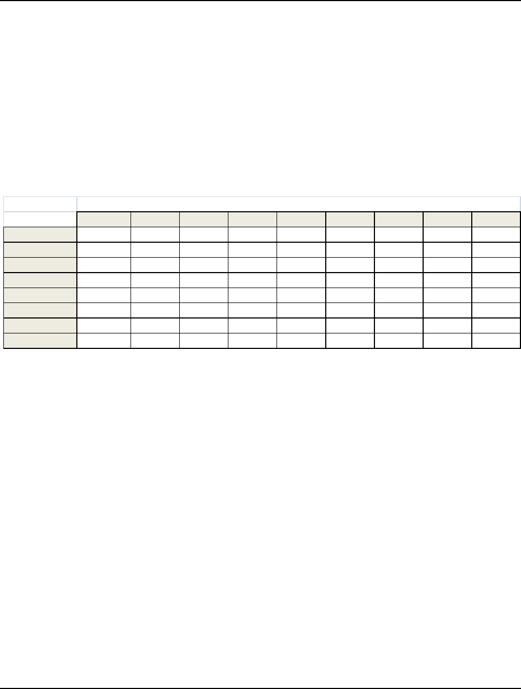
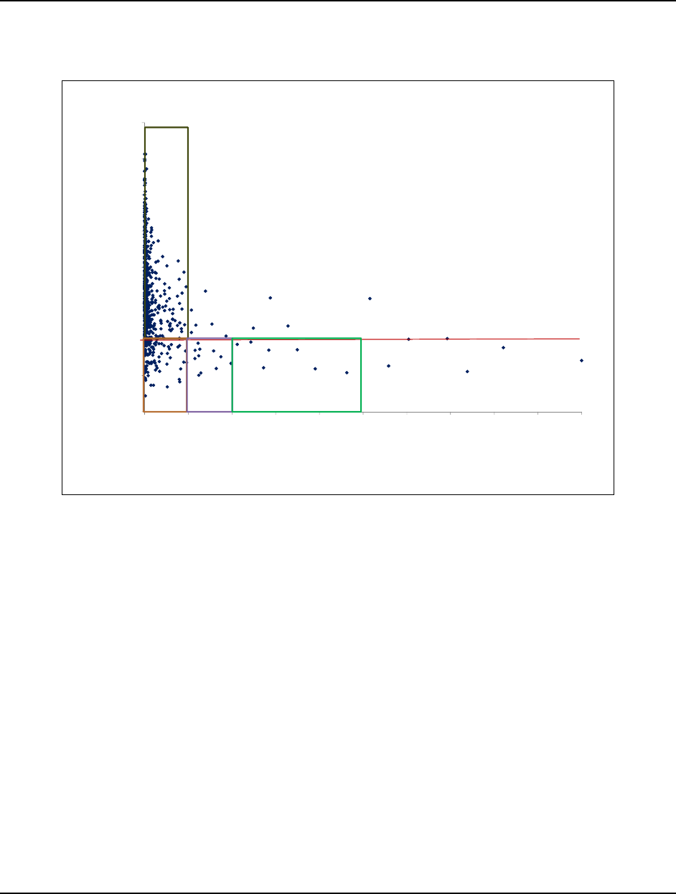
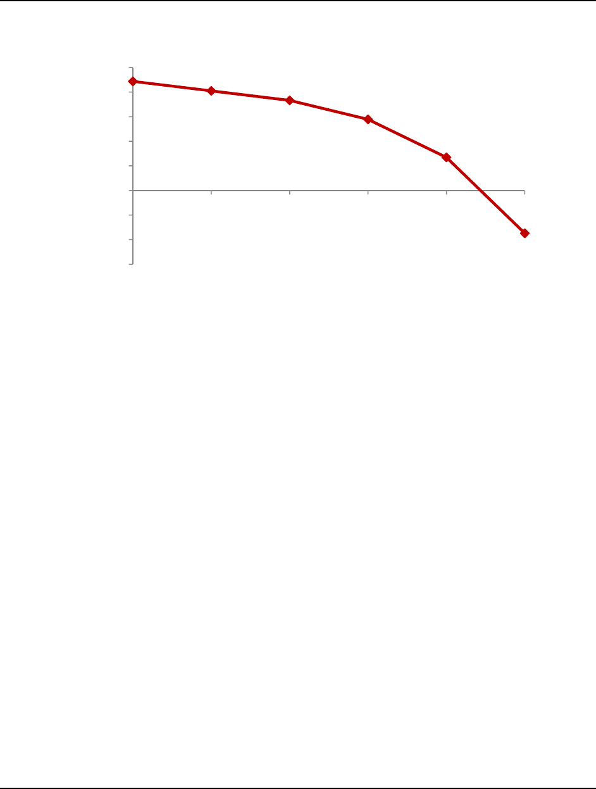

Page 21
Academy of Marketing Studies Journal, Volume 17, Number 1, 2013
IMPROVING PRICE PERFORMANCE WHEN DEMAND
ELASTICITY IS DIFFICULT TO ESTABLISH
James Hamister, Wright State University
Pratik Parikh, Wright State University
ABSTRACT
This paper presents a case study conducted with a distributor to improve price
performance for a national hardware distribution network. This case illustrates a simplified
heuristic approach to improving pricing performance in situations where optimal pricing
analysis on an individual SKU basis is impractical and IS decision support systems are needed.
We find substantial opportunities to improve margins for retailers in this context, particularly
among low-margin product families. Our findings are reported with permission of senior
management at the distributor, but data have been masked to preserve confidentiality.
INTRODUCTION
Companies are always seeking opportunities to improve their bottom-line. The current
volatile economy has only increased the intensity with which such opportunities are sought,
evaluated, and implemented. Among several decisions that a company may be faced with,
optimizing supply chains is becoming ever more critical to improving operations. Very
frequently decision-support tools grounded in advanced statistics and mathematical modeling are
employed to help with the decision-making process.
Among several levers that a company can operate to optimize its supply chain,
identifying the optimal retail price of the products is crucial. The price of a product is a function
of several costs, such as procurement, inventory, transportation, and marketing, and the expected
profit margin. One would think that if all factors remaining unchanged, raising price will raise
profit margin. However, academic literature and industry practice suggests that price increase is
almost always accompanied with demand decrease. The price elasticity of demand is a frequently
used metric to quantify the reduction in demand for a unit increase in price.
Models exists that can help determine the optimal price of a product if the demand is
elastic to price. The assumption in most of these models is that enough transactional data exists
to help determine the elasticity value based on statistical analysis. Though the advancement in
information technology has helped in collecting ample data, there are limitations to statistical
analysis when SKU counts are very high and transactions per SKU per time period are limited.
There are several commercial sectors where transactional data is too limited to derive statistically
significant elasticity values. One such segment is wholesale distribution where we observed both

Page 22
Academy of Marketing Studies Journal, Volume 17, Number 1, 2013
of these phenomena. Through a case study we share insights gained by analyzing their data and
deriving elasticity values for several products. We indicate that traditional models for price
optimization may not be appropriate in such instances and sound heuristic approaches to price
improvement may be required.
The case background is a U.S. national retail network of non-perishable products, with
hundreds of retail outlets. Local management has significant autonomy with respect to items
carried, prices, and inventory policies. At the national level, management is responsible for
sourcing, distribution, back office support, advisory, and monitoring services to improve
performance of the overall network. A central information systems (IS) service provides back
office support through the company’s commercial ERP system. Prices are set at the local level
by applying a gross margin percentage (product markup) to product families in the ERP’s pricing
matrix. Price levels have been established informally at the local level with little guidance from
analytic approaches. The ERP system captures detailed point-of-sales (POS) data with several
years of history available. Currently the overall organization is profitable, yet central
management believes there is potential to improve profitability even further with a more
systematic approach to setting prices at the local level, particularly given substantial disparity in
performance levels between retail locations in markets deemed comparable in potential.
This paper presents a systematic approach for price improvement recommendations in this
context. Our contributions are two-fold:
1. Using a systematic approach towards analyzing actually sales data, we attempt to determine the price
elasticity values. We identified several product family and customer type combinations where the demand
seems to behave independently of price.. Using a theoretical break-even analysis, we suggest an approach
to share with the management insights on the effect of the direction and degree of price change on overall
company profitability.
2. To help such managers actually realize benefits, we propose an intuitive and easy-to-implement heuristic to
improve their price performance, and in turn their bottom-line.
We first review relevant literature, followed by discussion of the methods employed to
develop recommended changes for local-level pricing matrices. In the final section we present
conclusions to this case study including potential generalizations from this research.
LITERATURE REVIEW
Price management is an important area for performance improvement in a retail setting.
A traditional approach to setting retail prices is “cost plus” or adding a constant percentage
increase to input costs (Shipley & Jobber, 2001). This approach is relatively simple and can be
applied with minimal reliance on data and models, which makes the approach attractive in many
retail contexts where IS support is limited and managers lack the sophistication to understand
and implement more technical approaches. As IS support in this realm has become stronger,

Page 23
Academy of Marketing Studies Journal, Volume 17, Number 1, 2013
traditional cost plus pricing is being supplanted by more theoretically sound approaches to price
setting.
Wal-Mart was an early proponent the everyday low pricing (EDLP) approach, which
targeted steady price levels both at the retail and wholesale level (Howell, 2005). The intent of
the EDLP model was to reduce promotional activity at both retail and wholesale levels,
improving flow in the supply chain, which reduces the bullwhip effect and therefore reduces cost
levels particularly upstream in the supply chain (Lee, Padmanabhan, & Whang, 1997). While
the EDLP pricing strategy has been successfully implemented in practice, several problems with
this approach have been identified. It may be quite difficult to identify a product price levels that
can be maintained at a steady level as the EDLP model requires, leading Wal-Mart to employ
promotional pricing at times to reduce excess stock (Troy, 1997). Kmart also dropped the EDLP
model due to implementation problems (Troy, 2002). Hoch et al. (1994) found substantial
benefits Hi Low pricing over EDLP pricing in a series of field experiments. In this context the
findings suggest that customers were much less price sensitive than perceived by the advocates
of EDLP. This study however did not consider the benefits upstream in the supply chain. An
implication of this study is the important challenge of setting optimal category prices in the
EDLP context. Since prices are intended to relatively static, errors can be expensive.
There has been extensive research on pricing under uncertainty, usually identified as the
newsvendor problem. In this problem, the retailer must make a stocking decision prior to
realizing random demand for a perishable product in a single selling period. Optimal solutions to
this problem involve balancing cost of shortage and cost of excess inventory. This problem can
be extended to a multiple-period horizon through dynamic programming. These models are
useful when customer price sensitivity is well defined (Petruzzi & Dada, 1999).
A number of papers have proposed optimal pricing models in different contexts generally
built on the newsvendor logic and supply chain considerations. Chen and Federgruen (2001)
model a two stage supply chain with deterministic demand serviced by retailers in distinct
markets. When retailers and the wholesaler separately set price for optimal profit, the system is
suboptimal, which is described as the double marginalization problem. Integrated solutions can
improve profitability along the supply chain, although these integrated decisions can be
analytically difficult due to nonconvexity in problem formulation (Sherali, Desai, & Glickman,
2008). A more recent stream of work in this area has focused on integrating pricing and
inventory replenishment decisions in the context of dynamically changing prices (Elmaghraby &
Keskinocak, 2003). This stream of research suggests that there is value to updating price
through the demand cycle based on revealed information when demand is stochastic, thus
utilizing price as a demand management tool to increase overall profitability. Boyaci and
Gallego (2002) modeled a two-echelon supply chain with a single wholesaler supplying multiple
retailers facing deterministic price-sensitive demand. Analysis of this model suggests that
separate lot sizing and price decisions are suboptimal when demand is low. Separate inventory
management policies such as vendor managed inventory are necessary to optimize overall profit

Page 24
Academy of Marketing Studies Journal, Volume 17, Number 1, 2013
under decentralized control. Hamister and Suresh (2008) propose a dynamic pricing model that
improves retailer performance when retail demand is autocorrelated. Chen et al. (2010) found
that dynamic pricing improves profitability for the retailer, but also affects the functional form of
demand experienced by the retailer.
A gap to the practical implementation of the above pricing models is that customer
demand functions are assumed to be known and can be described mathematically. These
assumptions are reasonably valid in many contexts, particularly for fast-moving consumer goods
where there are a large number of separate transactions that tend to be statistically predictable.
Category management has been suggested as a managerial improvement under these
circumstances (Richard A. Gooner, Morgan, & Perreault, 2011). Category management is
defined as “the distributor/supplier process of managing categories as strategic business units,
producing enhanced business results by focusing on delivering consumer value (Blattberg &
Fox, 1995).” Retail products are divided into a set of product categories, with each category
managed as a strategic business unit within the enterprise. The retailer consists of multiple
physical locations with each location serving one or more customer segments. Each product
category is served by a supply network, with one of the suppliers designated as a Category
Captain (CC). The CC plays a key role in the planning and implementation of merchandising
plans for the category, including decisions on product selection, placing, promotion, and pricing.
Each category is also supported by a distribution network and appropriate information exchange
between trading partners. Category plans are formulated with a great deal of input from the
Category Captain. Retailers face the risk that plans will favor the Category Captain’s products
over alternative suppliers’ products at the risk of reducing overall category performance. As
such, retailer trust in the CM process was found to be an antecedent to plan implementation. Past
research has also considered the impact of this close relationship with key suppliers finding a
tendency to reduce performance of minor suppliers (Richard A Gooner, 2001). Category
management is effective in pricing when the CC has access to extensive demand data through the
retail POS system and demand functions are well behaved.
Davenport (2006) describes data analytics as a “killer app” that has great potential for
creating competitive analysis for organizations. Data analytics involves the systematic collection
and analysis of detailed information extracted from organizational and interorganizational
information systems, generally involving the use of optimization techniques described above
applied to analytical models based on actual data. Analytic approaches have been applied
extensively in the evaluation of complex financial instruments (e.g., (Jia-Hau, Mao-Wei, & Leh-
Chyan, 2009; Mazzoni, 2010; Miller & Platen, 2008). Yeoman (2009) provides an overview of
the use of data analytics in a retail pricing context. In this review, revenue management models
should support improved decisions through modeling: demand seasonality, normalization of data
for independent factors, identification of complements and substitutes, segmentation, and
prediction of price elasticities. These analytical approaches generally require extensive
transaction histories in order to isolate the various factors that affect demand.

Page 25
Academy of Marketing Studies Journal, Volume 17, Number 1, 2013
No research to date has been published to our knowledge to guide managers in pricing
decisions when demand is relatively infrequent and difficult to describe statistically, and the
retailer offers a very large number of products where individual item analysis is difficult. Our
paper considers the case of a distribution network where unit demand levels tend to be low and
difficult to describe with statistical distributions with reasonable accuracy. Furthermore, we also
observe that the relationship between price and demand (i.e., elasticity) is difficult to establish,
which renders traditional price optimization models based on constant elasticity assumptions
non-applicable. To improve pricing performance at such companies, we present an alternative,
heuristic approach when demand is not-so-well-behaved with price and/or when statistically
significant elasticity values are difficult to obtain.
METHODS
In this section we detail our experience analyzing data at this company and the practical
challenges we faced in trying to determine the optimal product prices. This led us to develop an
intuitive, easy-to-implement, and yet theoretically sound heuristic for pricing improvement.
ANALYZE EXISTING PRICE DATA
Our first analysis occurred at the SKU level to determine the demand function for
individual products at several example retail locations. The purpose of this analysis was to
determine price sensitivity of demand to better determine directional change in price levels. To
develop some insights into how products were priced at different demand levels, we plotted the
number of units sold per transaction against unit price (averaged monthly). Figure 1 shows a plot
of units sold per transaction and monthly-averaged unit price for a product (top 5 from a sales
volume perspective) at a retailer. Observe the rather inconsistency in the price charged for this
product for transactions with the same number of units sold. Given that this relationship is static
(i.e., does not account for possible demand autocorrelations), we decided to investigate this
further using time-series models.
We adopted a time-series model specification using one-period autoregression to estimate
price sensitivity. Time series methods were chosen to account for the potentially dynamic nature
of demand in this market and “partial out” spurious relationships between price and units sold
(Hamister & Suresh, 2008). The function takes the form:
Demand
t
= a + b*P
t
+ c*Demand
t-1
+ error (1)
Page 26
Academy of Marketing Studies Journal, Volume 17, Number 1, 2013
Figure 1. Price-Demand relationship for a product sold at one of the retailers.
The above function states that demand during period t is a function of price during the
period and also the demand in the prior period, plus an error term that represents unpredicted
demand. POS data is captured on a transactional basis.
Our first analytical decision was to determine an appropriate aggregation of data to
develop demand functions. We “bucketed” transactions by one week periods, two week periods,
and months to determine the interval that best fits the data. Since prices varied with each
transaction we adopted average price in the period as our variable P. Results from weekly and
biweekly buckets were substantially the same as monthly buckets, and given the relatively
infrequent transactions, we believe monthly bucketing is most appropriate for both analytical and
managerial purposes.
Our next step was to examine a series of regression analyses using equation (1) as our
specification. We selected a retailer from the network with which to conduct this analysis. The
retailer chosen was considered as representative of average performance based on market and
profitability by our management contacts. Results for these regression analyses are presented in
Table 1 below. We selected SKU’s with the highest numbers of transactions for the prior 12-
month period for analysis. High transaction volumes were needed for adequate statistical
estimation.
.
25.0
27.0
29.0
31.0
33.0
35.0
10 20 30 40
Average Price ($)
Units Sold
Page 27
Academy of Marketing Studies Journal, Volume 17, Number 1, 2013
Table 1: AR(1) model fit for selected SKU’s
Product Family SKU Price coeff (b) Std. Error (b)
Auto-regressive
coeff (c)
Std. Error (c)
A 0001 -0.88 1.01 -0.64 0.19
A 0002 -0.74 0.53 -0.11 0.21
A 0003 0.33 1.17 -0.29 0.22
A 0004 -0.03 0.37 -0.12 0.39
B 0005 0.43 0.31 -0.49 0.21
B 0006 -0.09 0.21 -0.16 0.22
B 0007 0.03 0.07 -0.31 0.21
B 0008 -0.31 0.24 -0.19 0.23
B 0009 1.16 1.32 -0.08 0.22
B 0010 -0.46 0.43 -0.24 0.21
We found that price sensitivity (parameter b) was not statistically different than zero (at a
0.05 significance level) for the products selected. This analysis was repeated at three different
retail outlets with similar findings (data not presented). These findings supported the conclusion
that in the range of prices in the transaction data, price-demand relationship is difficult to
establish (and that demand changes appear to be independent of price changes). This fits the
perceived managerial analysis since customer demand is expected to be reasonably price
insensitive for these items. Products in these categories are expected to be price insensitive since
demand is derived from repair or fabrication needs, and customers generally do not purchase
anticipatory inventory.
This conclusion of price insensitivity should be interpreted cautiously. First, we would
expect to see demand drop when price reaches some threshold level due to both competitive
reasons and customer push-back. In addition, customer evaluation of price may be based on a
basket of products rather than based on the individual product. We would expect to see this
basket effect with a general price increase, which we will discuss below. Our second
observation from this analysis is that autoregressive parameter (c) was rarely significant for the
12-month period analyzed. That is, past demand is not a significant predictor of future demand.
Break Even Analysis and Recommended Overall Margin Change
Although the above data analysis indicated to us that demand is relatively insensitive to
price, we were not able to determine from the data an estimate of price limitations that could be
reasonably determined across the network. However, to guide managerial decision-making, we
introduce an analytical tool to determine break even effect of price changes. The concept of
break even analysis (Nagle, Hogan, & Zale, 2011) in this context is quite simple and as follows:
for a proposed price change, calculate volume effect that would leave the retailer with exactly the
same profit, offsetting price effects and volume effects. Price effect is the profit increase
expected with a price increase if volume is unchanged. The volume effect is the customer
response in volume to a price change. For example, consider a product with 20% gross margin

Page 28
Academy of Marketing Studies Journal, Volume 17, Number 1, 2013
at current prices. A 5% price increase will yield more profit as long as the volume decrease is
less that 20%, as depicted in table 2. Conversely, a 5% price decrease for the same product will
increase profitability only when volume increases by more than 33%.
This analytical tool can be used to frame the discussion with retail management to
determine overall pricing direction. We consider likely customer volume response at the current
margin level and determine an overall price change plan. Discussion with executive
management guided by this analysis determined that an overall margin increase, denoted by delta
(δ), would be appropriate in this context.
Table 2: Break-even analysis
Segment Margin Performance
Since analytical estimates of price sensitivity are not available in the data, we propose a
heuristic approach to price improvement. We decided upon the following two objectives for this
heuristic: (i) it must be theoretically sound and (ii) it must be practical enough to be implemented
across the local retailers by central IS services. First we describe the heuristic, and then we
evaluate it against these two criteria. Figure 1 provides the steps we followed as part of this
heuristic.
The heuristic is based on historic (one-year) history of average GM% for each product
family at the individual retail outlet, and described in figure 2 below. The heuristic is described
in the steps below and can be implemented by the centralized IS services organization to provide
price matrix recommendations.
Step 1. Extract sales data by product family. The first step is to extract total sales and
margin by product family for the individual retailer, and determine overall average GM% for the
retailer. We determine the largest sales volume product family and set that item to sales index
value of 1, and calculate the relative sales index for product families as a percentage of the
Price Change 10% 20% 30% 40% 50% 60% 70% 80% 90%
35% -78% -64% -54% -47% -41% -37% -33% -30% -28%
25% -71% -56% -45% -38% -33% -29% -26% -24% -22%
15% -60% -43% -33% -27% -23% -20% -18% -16% -14%
5% -33% -20% -14% -11% -9% -8% -7% -6% -5%
-5% 100% 33% 20% 14% 11% 9% 8% 7% 6%
-15% 300% 100% 60% 43% 33% 27% 23% 20%
-25% 500% 167% 100% 71% 56% 45% 38%
-35% 700% 233% 140% 100% 78% 64%
Gross Margin
Page 29
Academy of Marketing Studies Journal, Volume 17, Number 1, 2013
largest sales volume family. An indexing approach is suggested to form comparable analyses
across retailers of different scale.
Figure 1. The proposed heuristic for price performance improvement.
Extract Sales Data by Product
Family
Identify Performance Regions
Calculate New Margin for Each
Family
Analyze Margin Changes
Local Management Input
Implement and Monitor
Step 2. Identify performance regions. We can then graph average GM% versus sales
index as graphed below. Each point on the graph represents a single product family. The graph
is divided into seven performance regions for margin change suggestions. Each region is
described below.
Region A: Items with sales index less than or equal to 0.1 and margin less than overall
retailer average. These are candidates for the greatest margin increase. Since volumes are
relatively low these items are less likely to be highly visible to customers. In addition,
competitive pressures on these items are likely to be lower if cost levels at competitors are
similar since there is less expected benefit to customers to “shop” these items. In addition, break
even analysis suggests that a product with current margin at 10% can break even with a 15%
price increase as long as volume decrease is less than 60%. For these reasons, we believe there
is justification for an aggressive price increase in this region. Product families in region A have
their GM% increased to the average GM% in region E plus the overall increase.
(2)

Page 30
Academy of Marketing Studies Journal, Volume 17, Number 1, 2013
Region B. Items with sales index greater than 0.1 and less than or equal to 0.2 and GM
below overage GM%. We are somewhat less aggressive with price increases in this region.
These product families are higher in volume and potentially more visible both from strategic and
customer viewpoints. We increase below average items to overall local retailer overall average
GM plus the general margin increase identified above.
(3)
Region C. Items with sales index greater than or equal to 0.2 and less than 0.5 and below
overall average GM%. We are less aggressive with price changes in this region. Volumes are
higher and items are correspondingly more visible. We also see less scatter in the data than we
see in region A which suggests a bit more price sensitivity. We use the logic here of splitting the
difference between overall average and current margin, plus a factor that represents a general
price increase.
0.5
(4)
Region D. Items with sales index greater than 0.5. These are likely to be the most visible
items in the portfolio and are therefore changed the least. Our micro analysis suggests that there
is little price elasticity in a sample of these items, yet risk averse in this region is managerially
prudent. Local retail managers are likely to be most knowledgeable of price limits in this region
given the high visibility, thus these families are more likely to be efficiently priced.
(5)
Region E. Items with sales index less than or equal to 0.1, and greater than overall
average margin. These are the highly profitable yet low volume product families. These product
families are the most likely to benefit from price increase for parallel reasons to those discussed
in region A, yet overall margins are already fairly high in this region. The overall average GM%
for region E are calculated and recommended margins that are below this level are increased to
this overall average plus the general price level increase delta.
(6)
for product families below
+ δ

Page 31
Academy of Marketing Studies Journal, Volume 17, Number 1, 2013
Figure 2. Application of our proposed heuristic for an example retailer.
0%
10%
20%
30%
40%
50%
60%
70%
80%
0.00 0.10 0.20 0.30 0.40 0.50 0.60 0.70 0.80 0.90 1.00
Avg GM%
Sales Index
21.25%
BC
E
A
D
Analyze Margin Changes
The heuristic above creates new suggested margin values for each product family and
customer type combination. These values are loaded into a temporary pricing matrix for
analysis. Sales and profit levels are simulated at various price elasticities as shown in figure 3
below. The same amount of price elasticity is applied to each SKU, from which volume and
profitability impacts are calculated. For example if demand is perfectly inelastic, volume will
remain unchanged and profit will increase 4.5% in our stylized example. Our example suggests
that as long as overall price elasticity is less than 6, our pricing heuristic will increase
profitability for the retailer.

Page 32
Academy of Marketing Studies Journal, Volume 17, Number 1, 2013
Figure 3: Theoretical relationship between %-increase in profit and elasticity.
Evaluation of Heuristic
Our first criterion to evaluate the heuristic is that it should be sound based on
microeconomic principals. First, the most aggressive margin increases are associated with
products that are currently sold at low margins. If cost levels are roughly comparable for the
same items, it is less likely that competitors are selling these products for substantially lower
prices. Thus for competitive reasons low margin products in this environment can likely
withstand price increases. Second, the most aggressive margin increases are associated with low
relative sales volume items. These items are likely to be less visible to customers as signals of
overall price performance for the specific location, and thus likely to be more acceptable from a
customer perspective. Because of lower volumes the relative benefits to customers to incur
search cost for better price are less, supporting our contention that these customers will be less
price sensitive for these items. Third, our heuristic uses the break-even price change logic.
Lower margin products are more highly leveraged as can be seen in table 2. For example a
product currently selling at a 10% margin, a 5% price increase will be profitable as long as
volume is reduced by less than 33%. On the other hand for a product with a current 50% margin,
a 5% price increase is only profitable if volume is reduced by less than 9%. Therefore our
heuristic focuses price increases for product categories that are least susceptible to loss if price
sensitivity levels are reached.
Our second criterion for this heuristic is that it is implementable. We believe that this
heuristic can scale (implemented across the network) for several reasons. First, the heuristic is
simple. It can be relatively easily explained to retail managers. Model acceptance is a
precondition for a complete roll out. Second, the heuristic is based on POS data. We don’t need
external data or complex equations to develop recommendations. The IT staff should be able to
-3%
-2%
-1%
0%
1%
2%
3%
4%
5%
00.51248
% Increase in Profit
Elasticity

Page 33
Academy of Marketing Studies Journal, Volume 17, Number 1, 2013
implement at a reasonable time investment. This is an important step towards making pricing an
internal core competency for the central IS services department (Dutta, Zbaracki, & Bergen,
2003). Third, we suggest an override feature to leverage idiosyncratic knowledge and serve a
“sanity check” on our recommendations. This will increase buy-in by retail managers as they are
given final involvement with implementing recommendations.
This heuristic can be evaluated in practice by implementing the program on a pilot basis.
We suggest identifying target retailers in different geographic regions to act as a treatment
sample, and equivalent retailers from the same region to act as the control sample. Top and
bottom line performance for these pilot cases can be evaluated statistically for change based on
historical mean and standard deviations of performance at these locations using an ANOVA
model. Using the matched-pair approach allows the separation of pricing effects from changes
in economic conditions that may be taking place in each region and allow for a valid analysis of
the heuristic on retailer performance.
CONCLUSIONS
We believe our price improvement heuristic can be generalized to any industry segment
that either has products or product-families for whom demand is relatively price insensitive or
have not yet increased the price to a level from where on the demand is elastic. Industry
segments, such as wholesale distribution, where customers do not tend to buy in bulk when
prices are low and vice versa, may see demand insensitivity to price. Products such as plumbing,
HVAC, specialized medications (e.g., antibiotics), certain consumables on which consumers
spend a small fraction of their monthly income or there are no close substitutes (e.g., eggs, milk,
bread, salt, and cigarette) may be suited for our heuristic.
There are several limitations to our heuristic that should be considered in evaluating its
fitness for use in a given circumstance. First, we assume a constant general price adjustment,
parameter delta in our model. We chose a single parameter for managerial simplicity given the
large number of SKU’s and locations under consideration. Yet additional performance may be
available with a separate adjustment in each “region” of our heuristic. Second, the sample of
retailers chosen for development of the heuristic may not be representative of the network as a
whole. We chose our sample to be representative of the range of performance in the network,
consistent with suggestions of Yin (1999), yet there is possibly variation in the network not
accounted for in the sampling plan that was available within our research budget.
Future research in this area is two-fold. First, the heuristic that we proposed will be fine-
tuned based on the results from the pilot implementations and eventually over the year of
practical application evaluated for effectiveness. Mechanisms to track lost sales due to price
increases must be set up to accurately capture the demand reductions (if any) due to price
increases. We expect that the price changes recommended by our heuristic over the course of the
next few months will help us identify the tipping point from where elasticity is significant and
Page 34
Academy of Marketing Studies Journal, Volume 17, Number 1, 2013
negative. From that point on, traditional price optimization methods may become effective.
Second, it is likely that a few months of pilot study data may provide us with enough information
to develop a variety of demand distributions and simulate the effect of price changes on company
profitability. This way, the company management may avoid several months of expensive pilot
and tracking, yet developing enough insights to fine-tune the parameters in the heuristic.
REFERENCES
Blattberg, R. C., & Fox, E. J. (1995). Category management: A series of implementation guides. Washington, DC:
Food Marketing Institute.
Boyaci, T., & Gallego, G. (2002). Coordinating pricing and inventory replinishment policies for one wholesaler and
one or more geographically dispersed retailers. International Journal of Production Economics, 77(2), 95.
Chen, F., & Federgruen, A. (2001). Near-optimal pricing and replenishment strategies for a retail/distribution
system. Operations Research, 49(6), 839-853.
Chen, H., Wu, O. Q., & Yao, D. D. (2010). On the benefit of inventory-based dynamic pricing strategies.
Production & Operations Management, 19(3), 249-260.
Davenport, T. H. (2006). Competing on analytics. Harvard Business Review, 84(1).
Dutta, S., Zbaracki, M. J., & Bergen, M. (2003). Pricing process as a capability: A resource-based perspective.
Strategic Management Journal, 24(7), 615.
Elmaghraby, W., & Keskinocak, P. (2003). Dynamic pricing in the presence of inventory considerations: Research
overview, current practices, and future directions. Management Science, 49(10), 1287-1309.
Gooner, R. A. (2001). Managing product categories. University of North Carolina, Chapel Hill.
Gooner, R. A., Morgan, N. A., & Perreault, W. D. (2011). Is retail category management worth the effort (and does
a category captain help or hinder)? Journal of Marketing, 75(5), 18-33.
Hamister, J. W., & Suresh, N. C. (2008). The impact of pricing policy on sales variability in a supermarket retail
context. International Journal of Production Economics, 111(2), 441-455.
Hoch, S. J., Dreze, X., & Purk, M. E. (1994). Edlp, hi-lo, and margin arithmetic. Journal of Marketing, 58(4), 16.
Howell, D. (2005). Supermarkets take new tack in battle against edlp. DSN Retailing Today, 44(10), 7.
Jia-Hau, G., Mao-Wei, H., & Leh-Chyan, S. (2009). A generalization of the barone-adesi and whaley approach for
the analytic approximation of american options. Journal of Futures Markets, 29(5), 478-493.
Lee, H. L., Padmanabhan, V., & Whang, S. (1997). Information distortion in a supply chain: The bullwhip effect.
Management Science, 43(4), 546-558.
Mazzoni, T. (2010). Fast analytic option valuation with garch. Journal of Derivatives, 18(1), 18-38.
Miller, S. M., & Platen, E. (2008). Analytic pricing of contingent claims under the real-world measure. International
Journal of Theoretical & Applied Finance, 11(8), 841-867.
Nagle, T. T., Hogan, J. E., & Zale, J. (2011). The strategy and tactics of pricing : A guide to growing more
profitably (5th Ed. ed.). Boston: Prentice Hall.
Petruzzi, N. C., & Dada, M. (1999). Pricing and the newsvendor problem: A review with extensions. Operations
Research, 47(2), 183-194.
Sherali, H. D., Desai, J., & Glickman, T. S. (2008). Optimal allocation of risk-reduction resources in event trees.
Management Science, 54(7), 1313-1321.
Shipley, D., & Jobber, D. (2001). Integrative pricing via the pricing wheel. Industrial Marketing Management,
30(3), 301-314.
Troy, M. (1997). 'sales' could undercut wal-mart's edlp image. Discount Store News, 36(21), 14.
Troy, M. (2002). Kmart: 2. Drop edlp--continue promoting the value message. DSN Retailing Today, 41(5), 33.
Yeoman, I. (2009). Competing on analytics: The new science of winning. Journal of Revenue & Pricing
Management, 8(5), 474-475.
Yin, R. K. (1999). Enhancing the quality of case studies in health services research. Health Services Research,
34(5), 1209-1224.

Reproduced with permission of the copyright owner. Further reproduction prohibited without
permission.